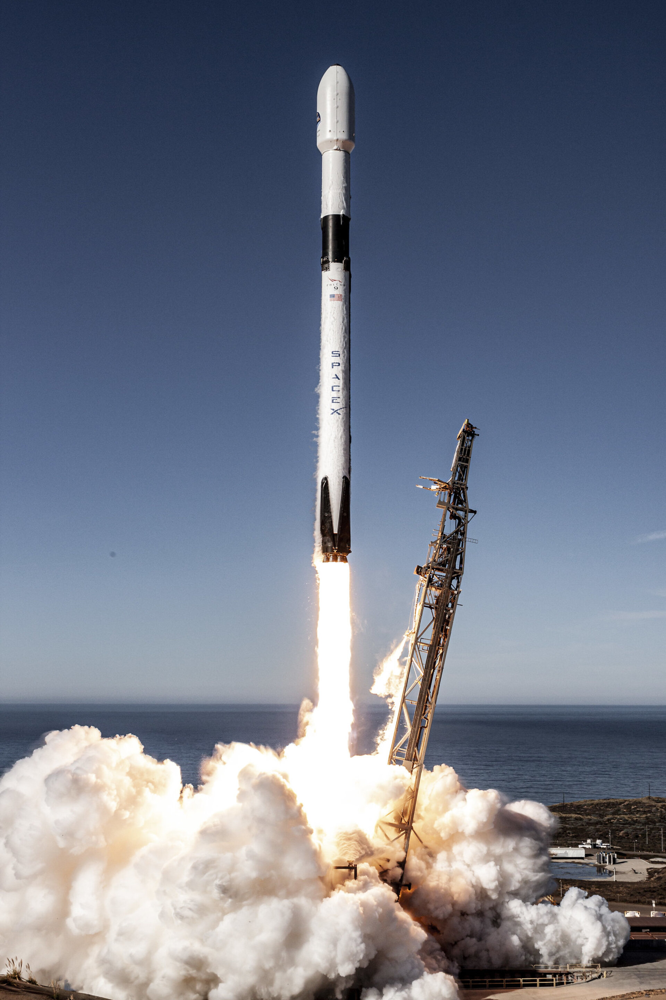
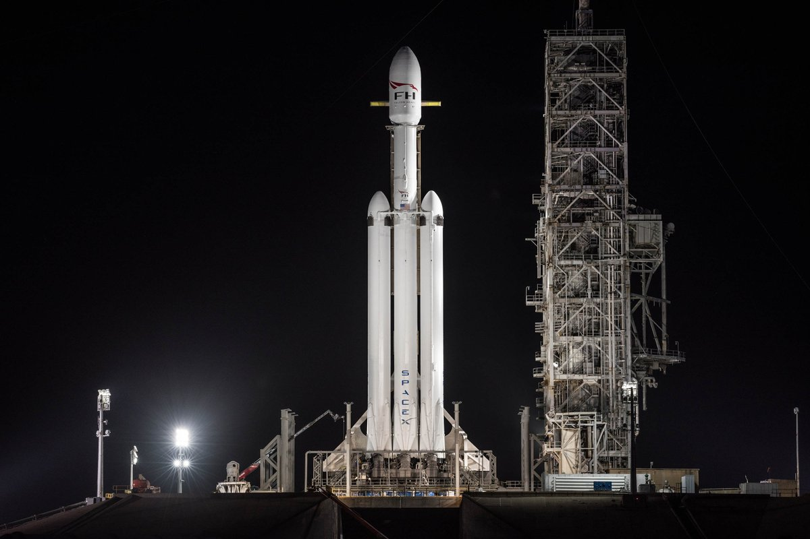
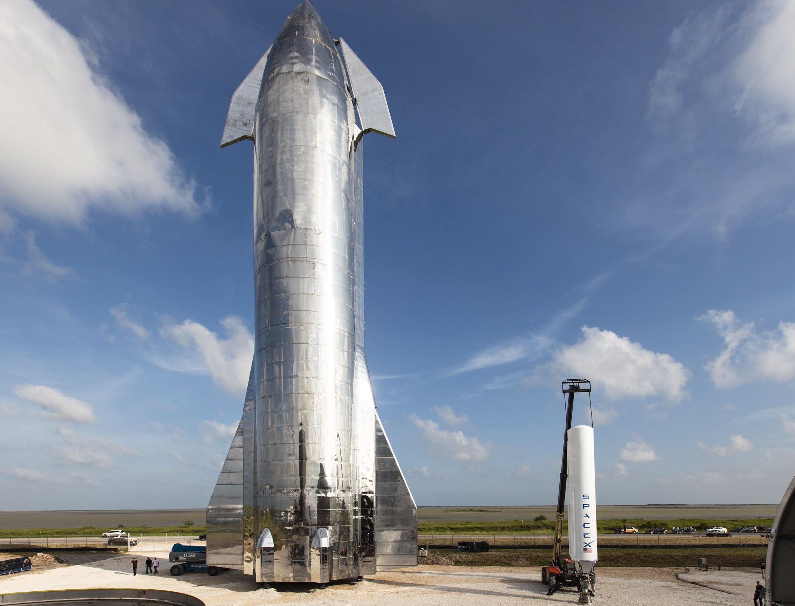

STARBASE
Starbase is a private rocket production facility, test site, and spaceport constructed by SpaceX, located at Boca Chica approximately 32 km east of Brownsville, Texas, on the US Gulf Coast. When conceptualized, its stated purpose was "to provide SpaceX an exclusive launch site that would allow the company to accommodate its launch manifest and meet tight launch windows." The launch site was originally intended to support launches of the Falcon 9 and Falcon Heavy launch vehicles as well as "a variety of reusable suborbital launch vehicles"
Our Innovation
For a sustainable future
For a sustainable future


